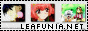
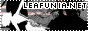

» Linkage; ----------------------------------------- If you wish to link Project: Shirayuki, text links are fine, but some buttons are also provided for you below. Please direct all links to "http://leafunia.ainoyume.net", and thank you for considering to link Project: Shirayuki!
 
----------------------------------------- Below is a short list of decent Pretear sites, feel free to browse through them for additional information on Pretear.